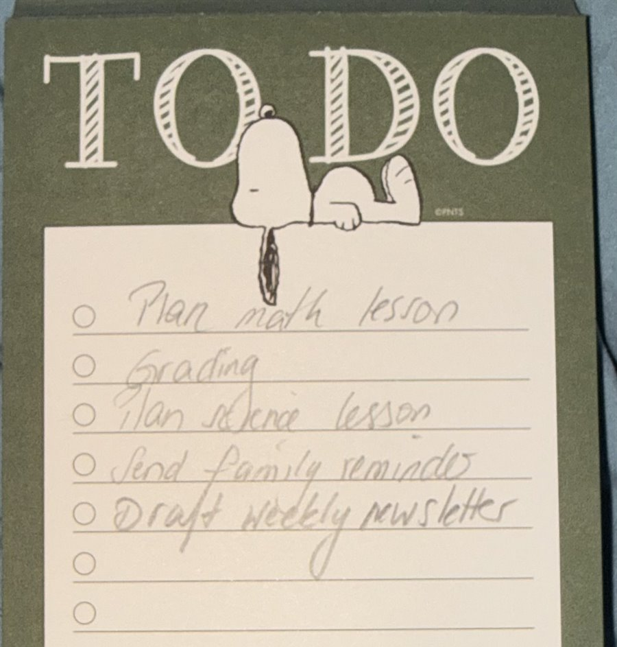
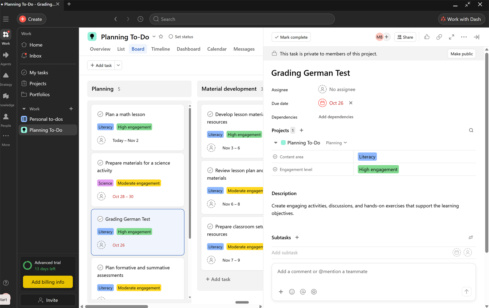
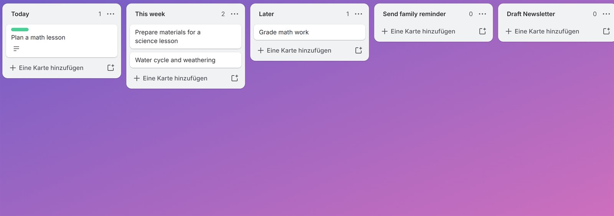

Which Tool Actually Helps? Testing Trello and Asana for Weekly Teacher Planning
More features do not automatically mean greater productivity. A side-by-side test on a routine task: organizing a teacher's week.
The Test
Productivity tools are supposed to make work easier, but more features do not automatically mean greater productivity. To test this idea, I compared two project-management tools, Trello and Asana, using a task that is common in my professional life: organizing weekly teaching responsibilities. My test included tasks such as planning a math lesson, preparing science materials, grading student work, sending a family reminder, and drafting a weekly newsletter.
I first organized the tasks without a specialized productivity tool, using a simple list. Then I repeated the process in Asana and Trello. I evaluated each approach using four criteria: setup effort, the number of steps needed to create or change tasks, ease of finding key functions, and the clarity of the finished workflow. My goal was not to identify the tool with the most features, but the one that made a routine planning task easier to manage.
Baseline


The baseline list required almost no training and was quick to create. Its weakness was flexibility. Tasks could not be easily rearranged, updated, categorized, or moved as priorities changed. This limitation highlights a broader advantage of cloud-based workflow tools. Kipps and Jones (2020) found that collaborative cloud technologies can improve workflow management and be cost-effective, although they also cautioned that complexity and long-term usability should be considered.
Asana


Asana was the most feature-rich option I tested, but it also created the greatest learning burden. The board offered sections, labels, due dates, descriptions, subtasks, dependencies, and multiple project views. However, basic actions were not always intuitive. For example, I initially struggled to determine how to remove an unwanted task. The interface also presented more structure than I needed for a simple weekly planning task. Asana could be valuable for complex projects involving teams, dependencies, or long timelines, but for this test, its additional features increased setup effort rather than reducing it.
Trello


Trello felt much more intuitive. Its board, list, and card structure made it easy to see tasks and move them between categories such as Today, This Week, and Later. I could understand the basic workflow with little explanation. Trello was not completely frictionless, however. Priority was harder to locate because Trello uses customizable labels rather than an obvious field called “Priority.” I also initially created one item as a list instead of a card, showing that even a relatively simple interface requires some learning.
Findings
| Criterion | Simple list | Asana | Trello |
|---|---|---|---|
| Setup effort | Very low; almost no training | High; many fields and views to learn | Low; boards, lists and cards are quick to set up |
| Creating and changing tasks | Tasks hard to rearrange, update or move | Possible, but some actions were not intuitive (e.g., removing a task) | Easy; cards move between lists |
| Finding key functions | Few functions to find | Harder; more structure than the task needed | Mostly easy; priority labels harder to locate |
| Clarity of finished workflow | Limited; no categories or status | Detailed, but heavy for a weekly plan | Clear at a glance |
These results reflect Davis's (1989) Technology Acceptance Model, which identifies perceived usefulness and perceived ease of use as key factors in whether people adopt a technology. Asana was highly useful but harder to use; Trello offered enough usefulness with far less effort.
Recommendation
The comparison reinforced an important point from Pathak (2022): technology provides meaningful benefits when its limitations are recognized and it is used to support human work rather than simply adding technology for its own sake. For my weekly planning task, I would recommend Trello. Asana offers more advanced functionality, but Trello provided the better balance of organization, flexibility, and ease of use.
Why It Matters
This matters beyond my own planning. When a school adopts a tool for all staff, its learning curve is multiplied across every teacher, taking time away from instruction. Educators should match the tool to the complexity of the task, test it on real work before committing, and count training time as part of its cost.
The test reminded me that productivity is not measured by how much a tool can do. It is measured by how effectively the tool helps a person complete the work that actually needs to be done.
References
- Davis, F. D. (1989). Perceived usefulness, perceived ease of use, and user acceptance of information technology. MIS Quarterly, 13(3), 319-340. doi.org/10.2307/249008
- Kipps, K. L., & Jones, A. K. (2020). Things are looking up: Using cloud-based technology tools in collection management workflows. Serials Review, 46(3), 215-223. doi.org/10.1080/00987913.2020.1806646
- Pathak, T. (2022). Innovative technology in higher education: Opportunities and challenges. Journal of Management & Public Policy, 13(2), 4-15. doi.org/10.47914/jmpp.2022.v13i2.001